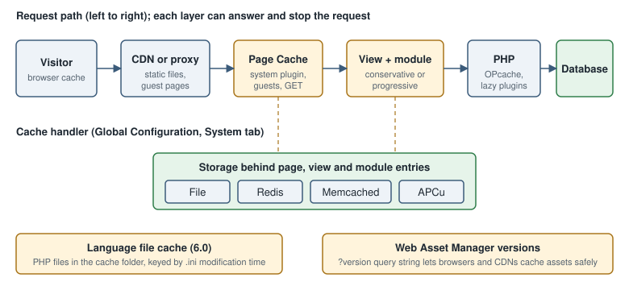

Joomla Caching and Performance: System Cache, Page Cache, Handlers, Gzip, Assets and OPcache
|
This content was generated with the assistance of AI and should be verified against the official documentation before being relied on in production. |
This page describes Joomla caching and performance tuning as it was on 2026-10-30, the date on which its facts were checked against the Joomla! User Guide (https://guide.joomla.org/), the Joomla! Developer Manual and the source tree of the CMS. It was written against Joomla 6.2.x (PHP 8.3 or later); the behaviour is the same in the 5.4 security-only line unless a version is named. The running example is the Tallpine Hiking Club site: a public site with trail reports that is quiet most of the week and receives a burst of visitors on Friday afternoons, when members plan the weekend.
Performance is mostly a decision about where an answer can be produced without running the full application. Site builders switch caching on and decide what is excluded. Administrators choose the cache handler and tune PHP and the web server. Developers make their components and modules cache-friendly. Editors only notice it when a fresh edit does not appear immediately.
The layers of a Joomla request
A visitor request can be answered at several points, from cheap to expensive:
-
the browser cache, controlled by the HTTP headers the site and the web server send
-
a CDN or reverse proxy in front of the site
-
the System - Page Cache plugin, which stores a complete page and answers before the component runs
-
the view and module caches enabled by the System Cache setting of Global Configuration
-
PHP itself, made cheaper by OPcache and by lazy plugin instantiation
-
the database, last, which is the slowest and the most contended layer

Each layer has a cost: staleness. A cached page does not know that an editor has just changed an article, so every layer must expire by time, be cleared explicitly, or be bypassed for the requests where staleness is unacceptable. The rest of the page goes through the layers in the order an administrator meets them.
The System Cache setting: off, conservative and progressive
The central switch is in System → Global Configuration → System → Cache, where the field is labelled System
Cache. It has three values (source file administrator/components/com_config/forms/application.xml):
-
OFF - Caching disabled, stored as
$caching = 0 -
ON - Conservative caching, stored as
$caching = 1 -
ON - Progressive caching, stored as
$caching = 2
When caching is on, the form shows the related fields: Cache Handler, Path to Cache Folder, Platform Specific Caching and Cache Time (minutes) (default 15), plus the connection fields of the chosen handler.
The difference between the two modes is visible in the source. Both modes allow components that declare a view
cacheable to store the rendered view: in BaseController::display() the view cache is used when the component asked
for it and caching is at least 1. The view cache is keyed by the request URL and the registered safe URL
parameters, which is why com_content passes a list such as catid, id, limitstart and lang with a variable
type. The same method also refuses to cache for a logged-in user. Both modes also let modules that declare caching
store their output.
Progressive caching (caching = 2) goes one step further: for guests on the site client, the application renders the
document with caching on, which lets the HTML document store the rendered buffers of the head, modules and component
so that a later request can reuse them. Progressive mode therefore stores more entries and saves more
work on a hit. The practical rule is: start with conservative, measure, and switch to progressive only when the site is
mostly public and the extra cache entries are correct for your extensions.
Cache entries are never created for a logged-in user in the view and module code paths described above. That is a safety property: a cached page must not contain a personalised greeting, a token or a form with a user’s CSRF token. It also means that caching helps anonymous traffic, not the members of the Tallpine club who log in to read the member-only trail conditions.
Platform Specific Caching
Platform Specific Caching ($cache_platformprefix, default No) is shown when caching is on. When enabled, Joomla
adds a prefix to cache keys when the web client detection recognises a mobile device, so that a mobile visitor and a
desktop visitor do not share one entry. Leave it off when the template is responsive, which is the case for Cassiopeia and for the
cassiopeia_tallpine child template, because it multiplies the number of entries without changing the markup.
Cache Time
Cache Time (minutes) ($cachetime, minimum 1, default 15) is the lifetime of an entry. A short time keeps content
fresh but lowers the hit ratio; a long time risks showing old trail closures. A reasonable policy for the Tallpine site
is 15 minutes for the public site, plus an explicit clear of the cache after the board publishes a closure.
The cache handlers
The Cache Handler list is generated from the storage classes the CMS ships (libraries/src/Cache/Storage). In Joomla
6.2 they are File, Redis, Memcached (Experimental) and APC User Cache (APCu). A handler that the server cannot
support is not selectable or fails with an error such as "Could not connect to the cache handler to clean the cache".
| Handler | Requirements and behaviour | Best fit |
|---|---|---|
File |
Writes serialised entries below |
Single server, shared hosting, development. |
Redis |
Needs the PECL |
Several web servers, containers, Kubernetes. |
Memcached (Experimental) |
Needs the |
Existing Memcached infrastructure. |
APC User Cache |
Needs the |
One server where Redis is not available. |
The file handler is the default and the safest choice, but it has two drawbacks that matter in containers. Each replica has its own folder, so one replica clearing the cache does not clear the others, and a container filesystem is lost on redeploy. Use Redis when more than one PHP process pool serves the same site. The platform pages cover running it: Redis for the server, Docker and Kubernetes for the containers, and Joomla local development with Docker for the Tallpine Compose stack.
The following configuration.php excerpt shows the properties written by the Global Configuration form for a Redis
cache. The host is a Compose service name, and the credential is read from the environment instead of being written
in the file.
<?php
// configuration.php (excerpt) - Tallpine Hiking Club, Redis cache handler
class JConfig
{
public $caching = 1; // 0 off, 1 conservative, 2 progressive
public $cachetime = 15; // minutes
public $cache_platformprefix = 0;
public $cache_handler = 'redis';
public $redis_persist = 1;
public $redis_server_host = 'redis';
public $redis_server_port = 6379;
public $redis_server_db = 0;
public $redis_server_auth = ''; // set from the environment in the deployment, e.g. CHANGE_ME
public function __construct()
{
$auth = getenv('TALLPINE_REDIS_AUTH');
if ($auth !== false) {
$this->redis_server_auth = $auth;
}
}
}Source: Joomla User Guide: System: Cache
The same environment-derived approach works for any value in configuration.php; the file is a PHP class, so a
constructor can read the environment. See configuration.php and
.htaccess for the other properties and for file permissions.
A matching Compose service for local testing follows. The tag is pinned and no password is needed on a private network.
services:
redis:
image: redis:7.4-alpine
command: ["redis-server", "--save", "", "--maxmemory", "128mb", "--maxmemory-policy", "allkeys-lru"]
networks: [tallpine]Source: Joomla User Guide: System: Cache
Setting allkeys-lru makes Redis evict old entries under pressure instead of refusing writes, which is the right
behaviour for a pure cache. If the same Redis also holds sessions, use a separate database number or a separate
instance, because evicting a session logs a member out. The Session Handler is a separate setting that offers
Filesystem, Database, APCu, Memcached and Redis in the same form; it does not use the cache handler.
Clearing the cache
System → Clear Cache (a User Guide page) lists the cache groups, such as page, com_content, com_modules and
com_languages, with the number of files and their size. Selecting groups and pressing Delete clears them, and
the toolbar offers an action to clear everything. Purge Expired Cache removes entries whose lifetime has passed. The same actions are
available from the command line through the console command cache:clean, which clears the whole cache, or only the
expired entries when its expired argument is given, as described in
the command line page; this is the way to clear a cache from a deployment
script. Editors who see stale content should first ask an administrator to clear the page group before
suspecting a bug.
The System - Page Cache plugin
The plugin System - Page Cache (plg_system_cache, class Joomla\Plugin\System\Cache\Extension\Cache) stores the
complete HTML of a page and serves it from onAfterRoute, before the component is dispatched. It is only suitable, in
the words of its own description, for sites that have static content or content that does not change frequently. It is
disabled on a fresh installation and has an effect only when System Cache in Global Configuration is on.
The plugin serves and stores a page only if all of these are true:
-
the request is for the site client, not the administrator
-
the request method is
GET -
the visitor is a guest
-
the message queue is empty, so a page carrying a "saved" or error message is never cached
Its parameters are:
-
Use Browser Caching (
browsercache): when on, a cache hit sends anETagand the plugin answers a conditional request with304 Not Modified, which lets browsers revalidate without downloading the page again. -
Exclude Menu Items (
exclude_menu_items): menu items whose pages are never cached. Use it for pages with live data, such as the Tallpine member-only "trail conditions" menu item or a contact form page. -
Exclude URLs (
exclude): one pattern per line, with regular expressions supported, for examplecom_usersor/component/tallpine/to exclude by component or path.
The cache key is the MD5 of the full URL plus whatever other plugins add. Plugins of the pagecache group take part
through three events, onPageCacheSetCaching, onPageCacheGetKey and onPageCacheIsExcluded (event classes
SetCachingEvent, GetKeyEvent and IsExcludedEvent), so an extension can switch caching off, vary the key, or
exclude a page. Because the key is the URL, any page that varies on something other than the URL, such as a cookie,
needs a pagecache plugin or an exclusion.
A site that enables the Page Cache plugin together with a CDN gets two caches that expire independently; clear both when content changes.
Enable the plugin from System → Plugins, or from the command line:
The plugin is installed disabled, with browsercache off and a cachetime of 15 in its default parameters. From the
command line, look up its extension ID and enable it with extension:enable:
php cli/joomla.php extension:list | grep -i "cache"
php cli/joomla.php extension:enable PLUGIN_EXTENSION_IDSource: Joomla User Guide: Using the CLI
Typical pitfalls with the Page Cache plugin:
-
Forms and CSRF tokens. A cached page may contain a form token that belongs to the first visitor. Joomla refuses to cache pages when the message queue is not empty, but not every page with a form; exclude contact forms and login pages.
-
Stale pages after editing. Saving an article does not clear the page cache. Lower Cache Time, clear the
pagegroup, or scriptcache:cleanin the publishing workflow. -
Personalised modules. A module that shows "Welcome back" is only correct for logged-in users, and logged-in users bypass the plugin. A module that varies on a cookie or a query parameter for guests does not.
-
Debug output. With Debug System on, results differ; test performance with debugging off.
Module caching
Each site module has an Advanced tab with three cache-related fields:
-
Caching: Use Global (follow the System Cache setting) or No caching
-
Cache Time: seconds (default 900), where the global time is in minutes
-
Cache Mode, which is set by the module in its manifest and is not editable in the administrator for core modules
The helper ModuleHelper::moduleCache() supports four cache modes, set by the module author:
-
static: one entry for every page that uses the same module parameters -
itemid: the entry changes with the active menu item (the mode declared bymod_menu) -
safeuri: the entry varies with a list of safe URL parameters and their filter types -
id: the module supplies its own cache ID
The helper turns caching off for every logged-in user and whenever the global setting is off, and the entry key
includes a hash of the visitor’s authorised view levels so that a guest entry is never served to a member who can see
more. A module that renders from the database but is identical for everyone, such as the Tallpine
mod_tallpine_nexthikes list of upcoming hikes, benefits most. Set a short cache time for it so that a newly published
hike appears within minutes. Caching a module that depends on the visitor, the time of day or a form is a bug; set
Caching to No caching. Module development guidance, including the dispatcher and the cache manifest fields, is on
the module development page.
Gzip page compression
Gzip Page Compression ($gzip, in the Server section of the Global Configuration, default No) makes Joomla
compress the HTML it sends. The code checks that zlib.output_compression and ob_gzhandler are not already doing the
job. The field description tells administrators to disable it if the server is already compressing responses or if it
conflicts with extensions.
Compressing at the web server is better, because the web server also compresses CSS, JavaScript, JSON and SVG, which PHP never sees. Enable Joomla’s Gzip only where you cannot change the web server. An nginx example:
# /etc/nginx/conf.d/tallpine-compression.conf
gzip on;
gzip_comp_level 5;
gzip_min_length 1024;
gzip_vary on;
gzip_types text/css application/javascript application/json image/svg+xml text/plain application/xml;Brotli, offered by many servers and CDNs, usually compresses text better than Gzip; configure it at the server or CDN level, not in Joomla. Do not compress twice: a double-compressed response arrives as garbled output.
Scripts and styles: the Web Asset Manager
Since Joomla 4, scripts and styles are described in joomla.asset.json files and attached to the page with the Web
Asset Manager (WebAssetManager). The registries load in a fixed order: media/vendor, media/system, media/legacy,
the active component, then the active template; a later definition with the same name replaces an earlier one. Modules
are not read automatically and need addRegistryFile(). See the Web Asset
Manager page for the full model. The performance relevant points are:
-
Dependencies are loaded once. An asset that two extensions need is emitted once, in dependency order.
-
Versioning controls browser caching. Every asset has a
version,autoby default. Withauto, Joomla appends a query string built from the media version, an MD5 of the Joomla version, the sitesecretand the date and time the media version was generated, shortened to six characters. Updating Joomla or clearing the version changes it, so browsers fetch the file again; otherwise a long-livedCache-Controlheader is safe. Thesecretis only an input to a hash and is not exposed. -
"version": "nocache"(added in 6.1) appends a random number on every request, which defeats browser caching on purpose. Use it in development, never in production. -
Defer and async. Attributes on an asset such as
defer: trueare copied to thescriptelement, so a script does not block rendering. -
Joomla 5.0 removed the ES5 assets, so the old
-es5variants andnomodulefallbacks are gone from core.
The following joomla.asset.json fragment from the cassiopeia_tallpine child template declares a stylesheet with a
file-content version so browsers cache it indefinitely and refetch it when it changes:
{
"$schema": "https://developer.joomla.org/schemas/json-schema/web_assets.json",
"name": "cassiopeia_tallpine",
"version": "1.0.0",
"assets": [
{
"name": "template.tallpine",
"type": "style",
"uri": "tallpine.css",
"version": "1.4.2"
},
{
"name": "template.tallpine",
"type": "script",
"uri": "tallpine.js",
"attributes": { "defer": true },
"dependencies": ["core"]
}
]
}Source: Joomla Manual: Web Asset Manager
Joomla has no core setting for CSS and JavaScript aggregation or minification. Core ships the
.min files next to the readable ones and loads the minified file when Debug System is off. Do not install a
third-party "compress and combine" extension without testing: with HTTP/2 or HTTP/3, many small cached files are often
as fast as one large file, and combining breaks the per-asset versioning. Keep the asset list short instead: unload
what a page does not use with $wa->disableScript() or $wa->disableStyle() in a template override, and
load a component’s assets only on the views that need them.
PHP: OPcache
Joomla is a large PHP application, and compiling its files on every request would dominate the response time. OPcache keeps compiled bytecode in shared memory and is the single most effective server change for any Joomla site. It is bundled with PHP, and since PHP 8.5 it is always built in. Check System → System Information → PHP Information to confirm it is loaded. For a production Tallpine server, a starting point is:
; /usr/local/etc/php/conf.d/opcache-tallpine.ini
opcache.enable=1
opcache.memory_consumption=192
opcache.interned_strings_buffer=16
opcache.max_accelerated_files=20000
opcache.validate_timestamps=0
; with validate_timestamps=0, reload PHP-FPM (or call opcache_reset()) after every deploymentTwo consequences matter for Joomla. First, with opcache.validate_timestamps=0 an updated Joomla file is not seen until
PHP is reloaded, so any core update, including an automated one, leaves stale bytecode in the workers until PHP is reloaded; either
keep timestamp validation on for sites that use automated updates (with a short opcache.revalidate_freq), or reload
PHP-FPM from a deployment hook. Second, size max_accelerated_files above the number of PHP files, since a Joomla site
with extensions easily exceeds 10000. The general PHP guidance, including preloading and the JIT, is in
OPcache, JIT and performance. APCu is a different
extension, a user-data cache, and does not replace OPcache.
The language file cache (Joomla 6.0)
Joomla language files are INI files, and parsing them on every request is expensive for a multilingual site such as the
bilingual English and German Tallpine site. Since Joomla 6.0, LanguageHelper::parseIniFile() writes the parsed result
of each INI file as a PHP array file under JPATH_CACHE/language/, with a name built from the path and the file’s
modification time. The next request includes that PHP file, which OPcache can keep in memory, instead of parsing the
INI text. A corrupted cache file is deleted and rebuilt, and an edit to an INI file changes its modification time and
therefore the cache file name, so there is nothing to clear by hand.
The practical consequences are:
-
the
cachefolder must be writable by the web user, as it must be for the file cache handler; if it is not, Joomla reports "Unable to write cache file" and falls back to parsing -
language overrides and extension language files are covered by the same mechanism
-
old cache files for previous modification times accumulate; they are tiny, and System → Clear Cache removes them
-
in containers with a read-only root filesystem, mount
cacheas a writable volume ortmpfs
See the language files page for the file format.
Lazy plugin loading (Joomla 6.1, PHP 8.4)
A site loads dozens of plugins on every request, and each plugin used to be constructed with its dependencies even if
none of its events fired. Joomla 6.1 uses the PHP 8.4 lazy object feature to defer this work. The plugin’s
services/provider.php registers the plugin through $container->lazy(...), and the DI container returns a lazy proxy
that builds the real plugin only when one of its event methods is first called. On PHP versions below 8.4 the container
returns the plain factory, so behaviour is identical and only the saving is lost.
Two points are worth knowing. The saving is not automatic for every plugin: a plugin’s provider has to opt in, and core
plugins such as System - Page Cache do. And the technique has a rule for extension authors: a plugin that is lazy
should not do work in its constructor that other code depends on, because the constructor now runs late. The Tallpine
plg_content_tallpine_conditions plugin is registered the same way:
<?php
// plugins/content/tallpine_conditions/services/provider.php (excerpt)
\defined('_JEXEC') or die;
use Joomla\CMS\Extension\PluginInterface;
use Joomla\CMS\Factory;
use Joomla\CMS\Plugin\PluginHelper;
use Joomla\DI\Container;
use Joomla\DI\ServiceProviderInterface;
use Joomla\Event\DispatcherInterface;
use Tallpine\Plugin\Content\TallpineConditions\Extension\TallpineConditions;
return new class () implements ServiceProviderInterface {
public function register(Container $container): void
{
$container->set(
PluginInterface::class,
$container->lazy(TallpineConditions::class, function (Container $container) {
$plugin = new TallpineConditions(
(array) PluginHelper::getPlugin('content', 'tallpine_conditions')
);
$plugin->setDispatcher($container->get(DispatcherInterface::class));
$plugin->setApplication(Factory::getApplication());
return $plugin;
})
);
}
};The measurable gain is largest on PHP 8.4 or later with many enabled plugins. Disable plugins you do not use as well: each enabled plugin still has to be listed and subscribed, lazy or not.
Database and queries
Caches hide slow queries; they do not fix them. Joomla caches its module list, language lists and component
parameters in the com_modules, com_languages and similar groups, but content queries run on a cache miss. Keep
the database server tuned (the InnoDB buffer pool is the main setting for MySQL and MariaDB), enable the slow query
log, and use Debug System in a development copy to read the query log and the profile of a page. Smart Search
indexing is done in the background, so read the Smart Search page before
indexing on a busy site. The debugging page describes the Debug Console.
Images
Images usually weigh more than everything else on a Tallpine trail report. The Media Manager accepts webp and avif
as well as jpg, png and gif; both are in the default extension and MIME lists of the component options (check
them if the options were customised on an upgraded site). Practical rules:
-
resize photographs to the largest size the template displays before upload; a 6000-pixel photo scaled by CSS is still a large download
-
prefer WebP or AVIF with a JPEG fallback for photographs, and SVG for logos and maps
-
give images
widthandheightso the browser reserves the space, which avoids layout shift -
use native lazy loading (
loading="lazy") for images below the fold; the Joomla article image layouts and the image field outputs support it, and overrides should keep the attribute -
never lazy-load the largest image visible on first paint, because it delays the Largest Contentful Paint
Joomla has no built-in thumbnail pipeline, so use an image optimiser in the build or on upload, or an image CDN. The
site pages on media optimisation and
responsive images and thumbnails explain the
formats and the srcset markup, and the Media Manager page covers the Joomla side.
CDN and reverse proxy
A CDN or a reverse proxy such as nginx, Varnish or Cloudflare takes static assets and, optionally, guest pages away from PHP. Joomla-specific points:
-
Cache
media/,templates/*/css,templates/*/js,images/and fonts with a long lifetime. Because Joomla versions asset URLs with a query string, make sure the CDN includes the query string in its cache key, or the version change is ignored. -
Do not cache
/administrator,/api, any request with a session cookie, or POST requests. -
Joomla sends cookies on pages even for guests when a session starts (for example for a login module or a CSRF token); a CDN that bypasses its cache on any cookie then caches nothing. Restrict the bypass rule to the Joomla session cookie of a logged-in user, or accept that only static files are cached.
-
A reverse proxy in front of PHP must pass the client address and scheme: enable Behind Load Balancer in Global Configuration so that client addresses are taken from the forwarded headers, and review the HTTPS settings described in web server, reverse proxy and HTTPS.
-
Purge the CDN when the site clears its own cache, or the two disagree.
# static assets with a long browser lifetime; Joomla versions the URLs
location ~* \.(?:css|js|woff2|svg|webp|avif|jpg|jpeg|png|gif|ico)$ {
expires 30d;
add_header Cache-Control "public, immutable";
try_files $uri =404;
}The immutable hint is safe only because the version query string changes when the file changes; if you use
"version": "nocache" by mistake, every request is a new URL and the hint has no effect.
Several web servers behind one load balancer need shared state for caching and sessions: a Redis cache handler, a Redis
or database session handler, a shared images and media volume, and a single secret in configuration.php. The
options are discussed in multi-site options and scaling.
Measuring with Lighthouse
Never tune by feel. The User Guide’s Performance section describes Page Analysis with Google Lighthouse, and also site speed monitoring and server health. Run Lighthouse in Chrome DevTools or from the command line against a production-like copy, with the Page Cache warmed and without debugging:
npx lighthouse https://staging.tallpine.example/trails --only-categories=performance \
--output=html --output-path=./lighthouse-trails.html --chrome-flags="--headless"Source: Joomla User Guide: Page Analysis
Read the report in this order. Time to First Byte reflects PHP, the database and the caches: a high value points at the server-side layers of this page. Largest Contentful Paint usually points at the hero image or a blocking style. Cumulative Layout Shift points at images without dimensions or late-loading web fonts. Total Blocking Time points at JavaScript. Change one setting at a time and re-run: a cache hit and a cache miss differ by an order of magnitude, so always measure both. For synthetic load, a tool such as k6 or JMeter against the staging site shows the effect of Redis and OPcache better than a single Lighthouse run. The Accessibility Checker from the same section is useful because it catches contrast and label problems at the same time.
Common errors and pitfalls
-
Enabling caching and then debugging content that "does not change". Turn caching off while developing a template or an extension; leave it on in staging and production.
-
A non-writable cache folder. The file handler, the language file cache and the view cache all depend on it; the error is reported in the administrator as "The cache folder is not writable".
-
A handler that is selected but unavailable. If the Redis server is down, Joomla reports that it could not connect and the site slows down while it retries; monitor the cache service and check system information and troubleshooting.
-
Different PHP settings for the web and the command line.
apc.enable_cliand OPcache settings differ between PHP-FPM and the CLI, socache:cleanfrom a script may not touch the APCu entries of the web workers. -
Caching the administrator. The cache applies to the site client; the administrator is never page cached, and caching there would be a defect.
-
Third-party extensions that break under caching. Extensions that output per-request data in a cached module need No caching; ask the vendor and test with the Page Cache plugin on.
Where older books and tutorials are outdated
-
Older tutorials describe a Cache Handler list that includes handlers such as APC, XCache and WinCache. Those handlers are not offered by current Joomla; the 6.2 list is File, Redis, Memcached (Experimental) and APCu.
-
The Joomla! 4 Masterclass (2023) targets Joomla 4, which reached end of life in October 2025, and its coverage of performance is thin; the same applies to the Developing Extensions for Joomla! 5 (2023), which says little about the Page Cache plugin. Both predate the language file cache of 6.0 and lazy plugin loading of 6.1.
-
Advice to combine and minify CSS and JavaScript with a Joomla setting belongs to Joomla 1.5 to 3. Current Joomla has no such setting; use versioned assets, HTTP compression and the web server.
-
Tutorials that enable Progressive caching everywhere ignore that it stores more entries and that the module output of a personalised page must be excluded.
-
Guidance that treats Gzip Page Compression as a must-have predates widespread web server compression; prefer the web server.